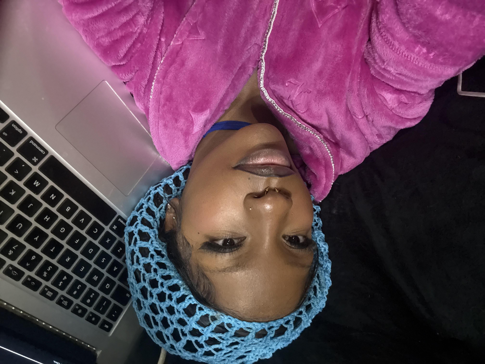

Creative StatementMy name is Aisha Amy, I go by Daavillain on my socials as an ode to Cruella de Vil.
My work is shaped by my personal journey and evolving relationship with creativity. I began my
college career as a psychology major, but over time my interests shifted as I reconnected
with creative ambitions I had earlier in life. In middle school, I wanted to be a director and
even wrote about it, but that vision faded as practicality and circumstance took over.
Attending an all-girls school, graduating during COVID, and leaving the city I was
born into created distance between myself and the creative environment I once imagined for my future.